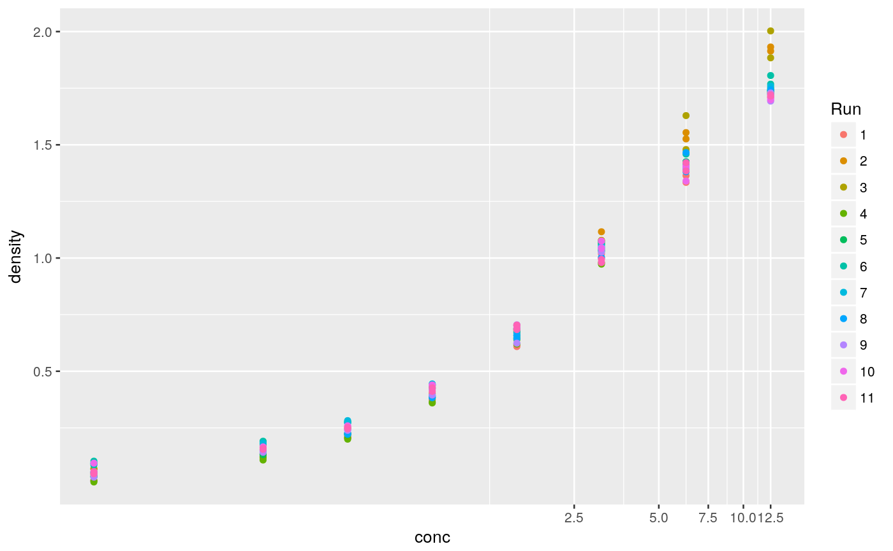
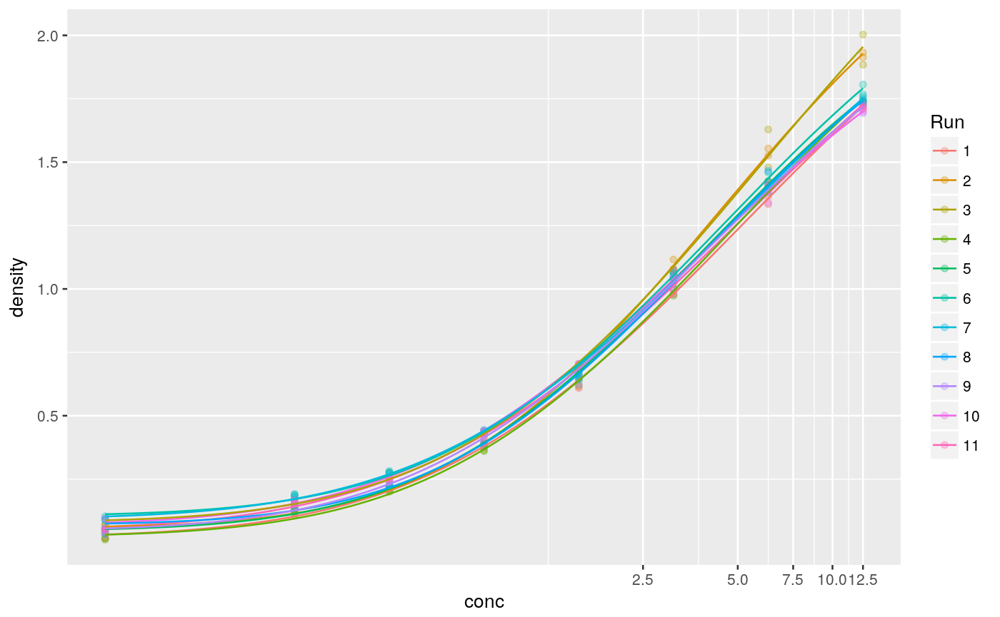

Implements drc nonlinear functions into the nlme framework for nonlinear GLS dose-response modeling.
glsdrm(form, curveid=NULL, data, fct, correlation = NULL, weights = NULL, control = NULL, start = NULL)
| form | Formula describing the dose-response relationship |
|---|---|
| curveid | Formula with parameter names on the left hand side (divided by +) and a column name in data, denoting a factor, to estimate separate parameters per factor-level. If NULL only fixed effects for a single curve will be estimated. |
| data | a data.frame object |
| fct | a function of the drc package |
| correlation | additional corClasses object |
| weights | additional varClasses object |
| control | list with nlme control arguments |
| start | optional list with initial values for the fixed components. If NULL the initial values will be found automatically. |
An object of class glsdrc
An application of glsdrm is shown on the help pages of data broccoli. EDx and selectivity indices can be calculated with functions ED and EDcomp. Model-averaged ED can be computed by function mmaED.
library(nlme) data(DNase) DNase$Run <- factor(DNase$Run, levels=1:11) ggplot(DNase, aes(y=density, x=conc, colour=Run)) + geom_point() + coord_trans(x="log")############# # fit a 5-parameter log-logistic model for each Run #mc <- glsdrm(density ~ conc, curveid=b + c + d + e + f ~ Run, # fct=LL.5(), data=DNase) #plot(mc, logx=TRUE, ndose=100) #print(mc) # only curve specific inflection points #mcd <- glsdrm(density ~ conc, curveid=e ~ Run, # fct=LL.5(), data=DNase) #plot(mcd, logx=TRUE, ndose=100) #print(mcd) # a 4-parameter log-Normal model mcln <- glsdrm(density ~ conc, curveid=b + c + d + e ~ Run, fct=LN.4(), data=DNase) plot(mcln, logx=TRUE, ndose=100)# AIC comparison #AIC(mc, mcd, mcln) # ED25, ED50, ED75 estimation for LL.5 model #ED(mc, c(25, 50, 75), interval="tfls") # pairwise comparison of ED50 between Runs #EDcomp(mc, c(50, 50)) # compound-symmetry correlation structure within Runs #mccs <- glsdrm(density ~ conc, fct=LL.5(), data=DNase, # correlation=corCompSymm(0.5, form=~1|Run)) #summary(mccs) # ED50 estimation #ED(mccs, c(25, 50, 75), interval="tfls")